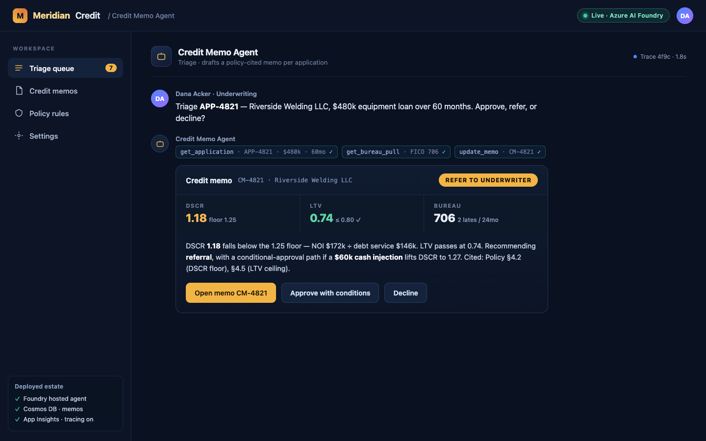

Idea to production in one continuous run — the same chain a solution
engineer drives from GitHub Copilot. The CLI types itself; the artefacts
appear in sync. Press play, or scrub to any beat.
Interactive demo · with voiceover
From one paragraph to a governed agent — live.
Idea → production, driven from a coding agent like GitHub Copilot. Six threadlight-∗ skills, one continuous run — no glue code, nothing mocked.
play · pause · scrub any beat, anytime
01 / 06
One paragraph in.
It starts with one paragraph. You describe a credit-memo triage agent in plain English — threadlight-design pulls out the process, entities, decision branches, and the hard credit rules.
copilot — credit-memo
›Use threadlight-design to spec a credit-memotriage agent for a regional commercial bank.For each SME loan application: pull the credit-bureau report, compute DSCR & LTV, thenauto-approve, refer, or decline — drafting amemo that cites the policy rule. Floors:DSCR ≥ 1.25, LTV ≤ 0.80.threadlight-design · fast-PoC engaged# parsing process · entities · branches · rules
Understood from your paragraphFSI
Process
Credit-memo triage
Entities
ApplicationApplicantBureau pullMemo
Decision branches
Auto-approveReferDecline
Rules
DSCR ≥ 1.25LTV ≤ 0.80
02 / 06
Specced & scaffolded.
threadlight-design writes the spec and the AGENTS file, scaffolds the four tools, seeds realistic sample data, and adds killer-prompt tests — it even renders the customer talk-deck and the seller prep-guide. A working project, not just slideware.
threadlight-design
›Looks right — scaffold the whole project:spec, the four tools, sample data, and tests.writing specs/SPEC.md + AGENTS.mdscaffolding src/agent/skills/ — 4 toolsrendering demo-deck + prep-guidewriting tests/killer-prompts.md
threadlight-local-test runs the agent on your own machine first — before any cloud spend. Ask it to triage a real application and it calls the tools live, then writes a credit memo with its reasoning.
threadlight-local-test
›Use threadlight-local-test to run the agenton my own PC so I can chat with it first.discovering tools from SPEC.md…MAF agent + SkillsProvider · tools wiredagent ready · running on your machine
credit-memo · chatlocal
Triage APP-4821 — Riverside Welding LLC, $480k equipment loan over 60 months. Approve, refer, or decline?
Refer to underwriter. DSCR 1.18 is below the 1.25 floor — NOI $172k ÷ debt service $146k. LTV 0.74 passes. Bureau: 2 late payments in 24 months, no liens. Drafted memo CM-4821 recommending referral, with a conditional-approval path if a $60k cash injection lifts DSCR to 1.27.
04 / 06
Deployed to your Azure.
threadlight-deploy runs AZD up straight into your own Azure subscription — Foundry, a hosted-agent container, Cosmos, and App Insights, provisioned and wired together. The credit-memo agent goes live in your tenant, ready to use in a workspace or in Teams. Nothing is mocked.
threadlight-deploy · azd
›Now deploy it to my own Azure subscriptionwith threadlight-deploy.azd up · tenant + subscription assertedremote build · hosted-agent containerprovisioning rg-credit-memo · eastus2
credit-memo · liveyour Azure

credit-memo agent · live in your tenant
Foundry ✓Hosted agent ✓Cosmos DB ✓App Insights ✓
azd up · deployed ✓ — reachable in a workspace or in Microsoft Teams
05 / 06
Governed & gated.
Then come the gates. threadlight-govern enforces runtime policy, threadlight-evals scores quality, and threadlight-redteam runs an adversarial PyRIT scan — a deprecated model is refused at the boundary.
govern · evals · red-team
›Before we ship, run the three gate skills:threadlight-govern, threadlight-evals,and threadlight-redteam.govern: AGT policy + middleware at thecontainer boundary → govern-manifest.jsonevals: 15 offline + continuous → App Insightsredteam: PyRIT scan — jailbreak · injection ·# deprecated model refused at the boundary · 403
Control-plane gatesDISCOVER · PROTECT
AGT runtime policy
✓enforced
Continuous evals
14/15pass
Red-team · PyRIT
0/120ASR
Deprecated model
403blocked
06 / 06
Scored for production.
A deployed MVP isn’t the finish line. threadlight-production-ready scores the agent across thirteen pillars — network, governance, identity, evals, responsible AI, reliability — then writes the customer hand-off package: 92/100, ship with two waivers. The prototype becomes something an ARB can sign off and an SRE can run.
› Use threadlight-production-ready to score this for production and write the customer hand-off.
One paragraph → a governed agent on your Azure.~50 minutes · every artefact auditable · nothing mocked
★ recap
A governed agent, shipped.
And that’s the whole arc. One paragraph becomes a working agent — deployed to your own tenant, governed and scored for production, with the customer talk-deck and prep-guide to walk in with. One continuous run, driven from your coding agent, nothing mocked.
92/100Production-ready score · ship with 2 waivers
13 pillarsVerified for ARB sign-off & SRE hand-off
your AzureGoverned agent live in your own tenant
sales kitCustomer talk-deck + seller prep-guide
Idea → production, in one continuous run.Driven from GitHub Copilot · everything past the PoC handled — govern, evals, red-team, scorecard, hand-off.
0:00 / 2:03
The kit — generated, not slideware
And it writes the kit you walk in with.
The same run doesn’t just ship code. threadlight-design also writes a brand-matched
customer talk deck and a matching seller prep-guide — real HTML you
screen-share, hand off, or print to PDF. Shown here on the fictional MeridianCredit bank sample.
demo-deck.html
Customer talk deckthreadlight-designCinematic, cold-open to close, with built-in speaker notes — drive it from the keyboard, in the room.
prep-guide.html
Seller prep-guidethreadlight-designUse-case summary, demo script, discovery questions, objection handling — with a seller / engineer mode toggle.
Both come from one run on the fictional credit-memo sample — nothing customer-specific.
The whole reel, in one breath
A paragraph in. A governed agent, live in your tenant, out.
Six skills, one continuous run — no glue code, no hand-offs, nothing mocked.
01Briefone plain-English paragraph
02Designspec, code & sales kit
03Localanswers live, tools traced
04Deployazd up into your Azure
05Governpolicy · evals · red-team
06Score13-pillar production gate
Your subscriptionFoundry, hosted agent, Cosmos & App Insights — in your own tenant, on your data.
Safe by defaultAGT policy, evals and red-team gates run on every single pass.
92–100The 13-pillar production-ready scorecard — earned, not asserted.
A walk-in kitA brand-matched talk deck and seller prep-guide, from the same run.
Microsoft Teams · Credit Memo Agent
Live in Microsoft Teamsthreadlight-deploySame agent, same memo — answering where your team already works.
That was the reel — now the receipts
Liked the demo? See it run for real.
The reel is a recreation. The case study is an actual end-to-end run — real prompts, OTel traces, costs, and verdict.